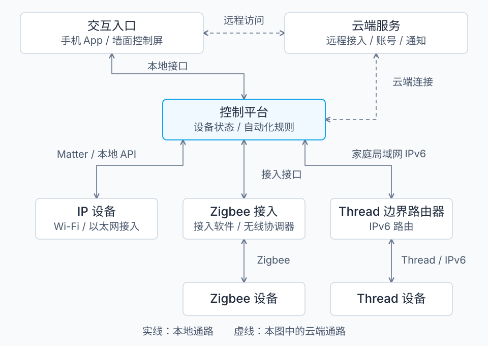

一个智能家居系统，可以拆成 设备、通信网络、协议接入、控制平台、交互入口，以及可选的云端服务。
理解架构时，最关键的是区分两件事：数据怎样到达设备，以及双方怎样理解“开灯、调温度”这些指令。 Wi-Fi、Thread 主要解决前者；Matter、MQTT 等解决上层通信，但它们的职责也各不相同。
下面以一套同时接入多种设备的家庭系统为例：

这是逻辑结构，不代表每个方框都要单独买一台机器。例如，一台智能音箱可能同时承担语音入口、控制中枢和 Thread 边界路由器的职责。
各部分分别做什么：
| 部分 | 包含什么 | 核心职责 |
|---|---|---|
| 末端设备 | 门磁、温湿度计、灯、插座、窗帘、空调 | 采集状态或执行动作；内部通常有芯片和固件 |
| 家庭网络 | 路由器、Wi-Fi AP、交换机、无线 Mesh 网络 | 让设备之间能够传输数据 |
| 协议接入 | Zigbee 网关、蓝牙网关、Thread 边界路由器 | 将不同网络中的设备接入系统，具体处理方式不同 |
| 控制平台 | 厂商中枢、Home Assistant 等 | 管理设备、维护状态、执行定时和联动规则 |
| 交互入口 | 手机 App、按键、控制屏、语音助手 | 接收人的操作，展示设备状态 |
| 云端服务 | 厂商服务器或自建远程服务 | 账号、远程访问、推送、历史数据、固件更新等；是否必需取决于产品 |
其中，“网关”和“控制平台”也经常被集成到同一台设备里。
常见协议分别处于哪一层：
| 技术 | 主要负责什么 | 常见使用位置 |
|---|---|---|
| Wi-Fi / 以太网 | 把设备接入 IP 网络 | 手机、中枢、摄像头、家电 |
| Zigbee | 一套低功耗组网和设备通信协议体系 | 门磁、人体传感器、灯、插座 |
| Thread | 低功耗 IPv6 Mesh 网络 | 传感器、门锁等低功耗设备 |
| 蓝牙 BLE | 近距离通信，常使用 GATT 读写数据 | 手机直连设备、配网，或通过蓝牙网关接入 |
| Matter | 统一设备类型、属性、命令和安全交互 | 通过 Wi-Fi、以太网或 Thread 控制设备 |
| MQTT | 按“主题”发布、订阅消息 | 设备、网关、中枢、云端之间 |
| HTTP / WebSocket | 请求接口或持续交换消息 | App ↔ 中枢、App ↔ 云端，以及部分设备接口 |
Matter 使用现有 IP 网络；蓝牙 BLE 常用于它的初始配网。“支持 Matter”不代表设备一定使用 Thread，也可能使用 Wi-Fi。Matter 官方 FAQ
MQTT 通常运行在 TCP 上，可以通过 TLS 加密；它不规定消息负载必须是什么格式，所以不同厂商都用 MQTT，也不意味着设备能直接互通。MQTT 标准
看三条实际链路，就容易理解它们怎样协作。
① 在家用手机开灯
如果是支持本地控制的 Wi-Fi 灯：
手机 App
→ 家庭 Wi-Fi / 局域网
→ 灯，或者先到家庭中枢再到灯
上面传输的可能是 Matter 指令，也可能是厂商自己的协议。连着 Wi-Fi，只说明网络通了；还需要双方支持相同的控制协议。
如果是 Zigbee 灯：
手机 App
→ 局域网
→ Zigbee 网关
→ Zigbee 网络
→ 灯
普通手机没有 Zigbee 无线接口，因此通常通过网关接入。自建系统也可以使用“Zigbee 无线协调器＋控制软件”实现这部分功能。Home Assistant ZHA 文档
② 门打开后自动开灯
门磁上报“门已打开”
→ 网关接入
→ 控制平台判断“现在是夜间”
→ 向灯发送“打开”命令
→ 灯上报新的状态
这里有三个不同角色：
- 传感器产生事件。
- 规则引擎决定是否执行动作。
- 执行器完成动作并反馈状态。
门磁和灯可以使用不同协议，只要控制平台能够同时接入它们。规则运行在家庭中枢里时，可以实现本地联动；如果规则放在云端，则需要相应的互联网连接。
③ 人在外面，远程开灯
一种常见实现是：
手机移动网络
→ 云端服务
→ 家中设备或中枢已建立的出站连接
→ 灯
设备或中枢通常主动连接云端并维持通信，所以这类方案一般不要求用户给家庭路由器配置入站端口转发。云端通信可以采用 MQTT/TLS、HTTPS、WSS 等，具体取决于厂商实现。AWS IoT 通信协议示例
自建系统也可以通过 VPN 访问家庭中枢，例如你之前用过的 Tailscale；进入家庭网络后，再由中枢控制设备。
最后有两个容易混淆的区别：
- Thread 边界路由器主要转发 IPv6 数据包。 Matter 指令可以穿过它，到达 Thread 设备；它本身不必理解“开灯”是什么意思。Thread 与 IPv6
- Matter 规定设备怎样表达能力。 例如灯有哪些属性、支持哪些开关命令；MQTT 则主要负责消息传递，主题和消息内容仍需另外约定。Matter 交互模型
因此，判断一套系统的架构，最有用的三个问题是：设备通过什么网络接入、控制指令采用什么协议、自动化规则运行在家里还是云端。